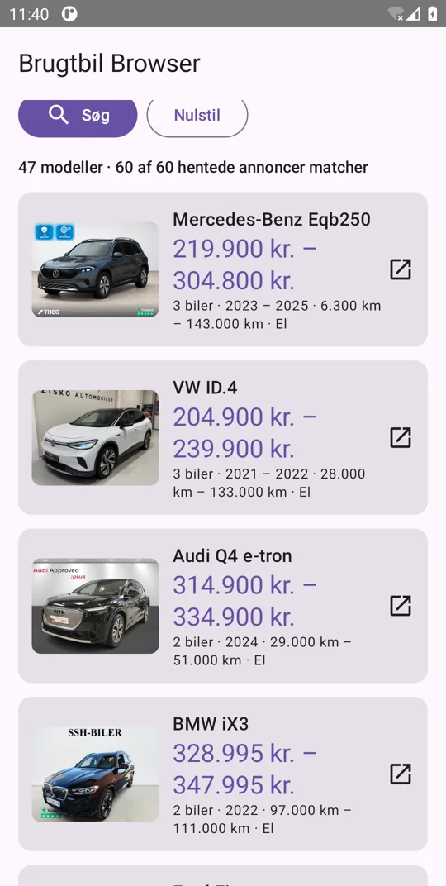
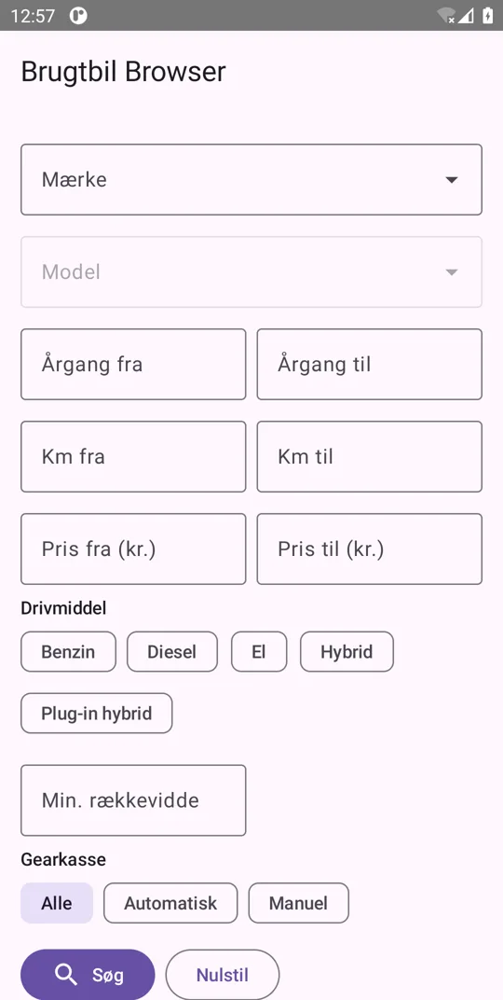
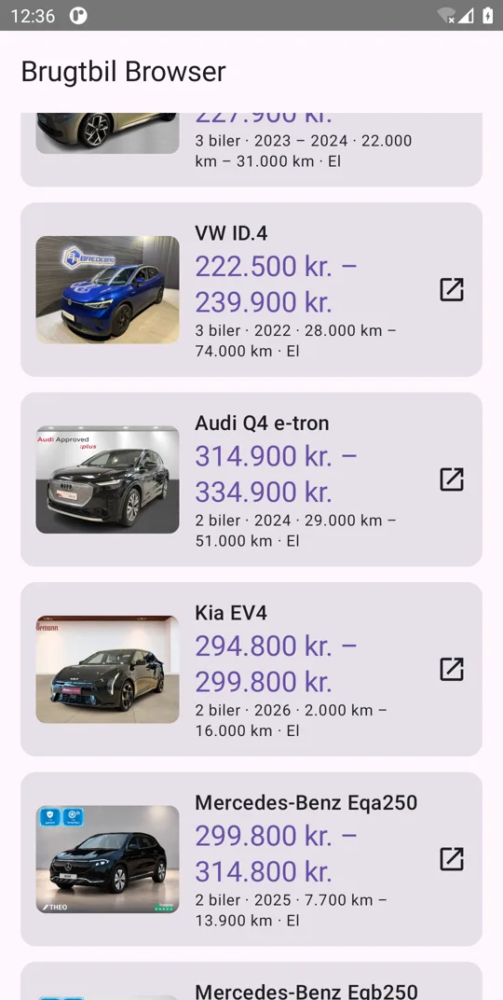

Brugtbil Browser
Se Bilbasens brugte biler som én række pr. model, med prisspænd, årgange og kilometer, i stedet for hundredvis af enkelte annoncer.
Hent til Android


Hvad den kan
Prisspænd pr. model
Alle Golf'er samles i én række (også på tværs af generationer), med laveste og højeste pris.
Filtre
Mærke, model, årgang, kilometer, pris, drivmiddel, gearkasse og minimum rækkevidde for elbiler.
Billeder af bilen
Forhandlerlogoer springes over. Mangler en model billeder, hentes et fra modellens egen side.
Direkte til Bilbasen
Tryk på en model for at se de enkelte annoncer på Bilbasen.
Installation
- Tryk Hent til Android på din telefon.
- Åbn den hentede fil. Android spørger måske, om din browser må installere apps. Tillad det.
- Nye versioner installeres oven på den gamle på samme måde.
Appen er ikke tilknyttet Bilbasen. Den henter offentligt synlige søgeresultater fra bilbasen.dk på din telefon. Kildekode: github.com/oliverlaursen/brugtbil-browser.